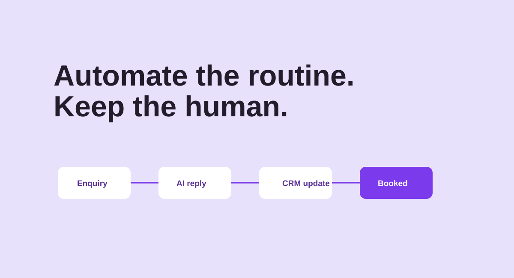

AI automation - Illustrative case study
Roofcraft AI
A human-centred AI workflow concept for Roofcraft that responds to early-stage enquiries, protects valuable context and keeps the sales pipeline moving.

Faster first responses, without losing the personal touch.
When enquiries arrive across forms, email and social channels, they are easy to miss and difficult to track. This Roofcraft automation concept classifies an incoming request, drafts an on-brand response, prompts a human where judgement is needed, and records the right details in a CRM-ready format for focused follow-up.
02 Challenge
Reduce repetitive admin while keeping customer conversations trustworthy.
- Route enquiries from multiple sources into one reliable process
- Give prospects timely, relevant next steps outside business hours
- Capture structured data without asking the team to duplicate work
The workflow uses a concise knowledge base and approved response patterns to ground generated drafts. It separates routine, low-risk tasks from decisions that need a person. Once approved, it logs the lead, creates a follow-up task and offers available meeting times-making the process visible rather than magical.
04 Business value
This is an illustrative workflow. Any deployment should be tested, monitored and reviewed for privacy, accuracy and platform requirements.